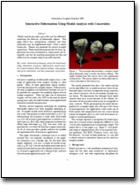

Examples AnimationsThe following movies are MPEG encoded.
|
|  |
Modal analysis provides a powerful tool for efficiently simulating the behavior of deformable objects. This paper shows how manipulation, collision, and other constraints may be implemented easily within a modal framework. Results are presented for several example simulations. These results demonstrate that for many applications the errors introduced by linearization are acceptable, and that the resulting simulations are fast and stable even for complex objects and stiff materials. Hauser, K., Shen, C., O'Brien, J. F., "Interactive Deformations Using Modal Analysis with Constraints." To appear in Graphics Interface 2003. |